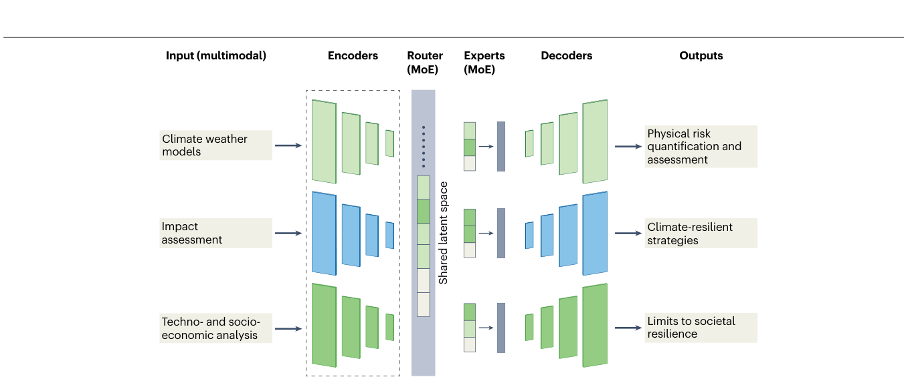
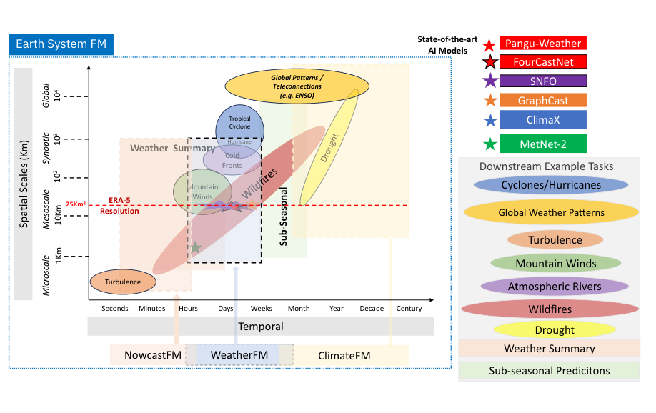
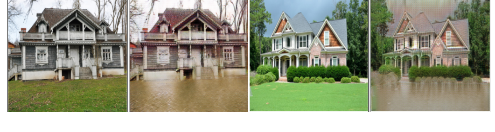

kClimate
Learning across the climate system—from atmospheric foundation models to integrated climate intelligence.
2026 · Nature Climate Change 16, 505–507 (Comment)
Y Ou, C Rodriguez-Pardo, AA Khourdajie, J Rogelj, P Zhou, SK Mukkavilli, et al.

A proposed general-purpose AI framework connecting climate knowledge across disciplines. Figure 1 · Y Ou et al., 2026Read publication · Google Scholar
2026 · EarthArXiv · Preprint
C Rodriguez-Pardo, G Ascenso, CGA Pedraza, ML Bachelery, et al.
Read publication · Google Scholar
2023 · arXiv preprint arXiv: 2309.10808 · Preprint
S Karthik Mukkavilli, D Salles Civitarese, J Schmude, J Jakubik, A Jones, et al.

Spatiotemporal scales of weather and climate foundation-model applications. Figure 1 · S Karthik Mukkavilli et al., 2023Read publication · Google Scholar
2024 · AGU24 · Conference abstract / presentation
AA Rahman, L Mackey, SK Mukkavilli, S Kahou
Read publication · Google Scholar
2022 · ACM computing surveys (CSUR) 55 (2), 1-96
D Rolnick, PL Donti, LH Kaack, K Kochanski, A Lacoste, K Sankaran, et al.
 Machine-learning opportunities across electricity generation, networks and demand. Figure 1 · D Rolnick et al., 2022
Machine-learning opportunities across electricity generation, networks and demand. Figure 1 · D Rolnick et al., 2022Read publication · Google Scholar
2019 · International Conference on Learning Representations (ICLR), AI for Social …
V Schmidt, A Luccioni, SK Mukkavilli, N Balasooriya, K Sankaran, et al.

Illustrative flood transformations generated by a CycleGAN; these are not site-specific flood predictions. Figure 1 · V Schmidt et al., 2019Read publication · Google Scholar
2017 · Penguin; edited by Paul Hawken
Research contribution by S. Karthik Mukkavilli
Read publication · Google Scholar
In the news
NASA and IBM Research Apply AI to Weather and Climate
KAIST climate research coverage — DongA Science